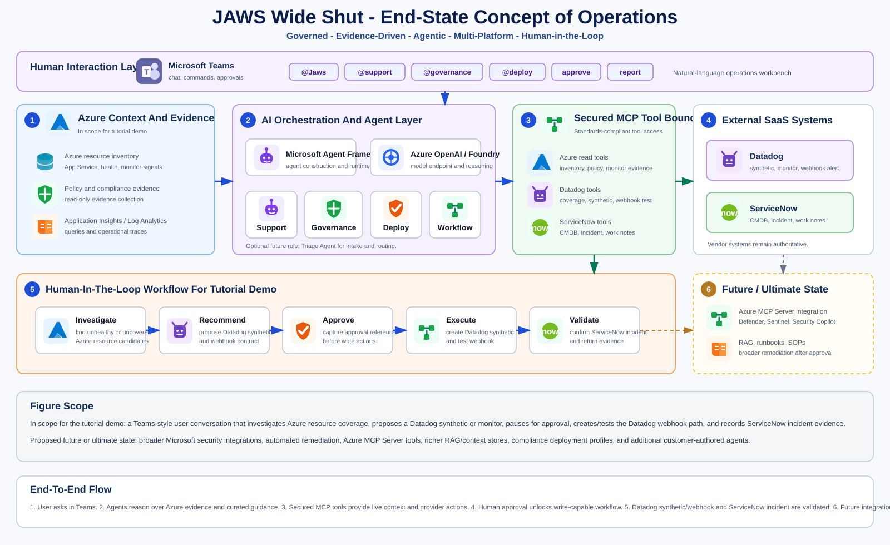

JAWS Agent Framework Tutorial
Introduction
JAWS is a step-by-step reference implementation for building a governed, full-stack agentic operations platform with the Microsoft Agent Framework.
Modern operations teams are being asked to manage increasingly complex cloud environments while also responding faster, proving compliance, reducing manual toil, and coordinating work across multiple enterprise systems. The challenge is not simply adding AI to operations. The harder problem is building a full-stack agentic platform that can reason over live cloud context, call approved tools, respect security boundaries, preserve operational evidence, and guide users through real workflows such as creating observability coverage, validating webhook delivery, and opening an IT service management incident.
JAWS uses the Microsoft Agent Framework tutorial as scaffolding for a real operational scenario. Rather than treating the Microsoft tutorial as a set of isolated code samples, this tutorial incrementally builds an agentic operations platform that can inspect Azure resources, recommend Datadog monitors or synthetic tests, use a hardened custom MCP server, validate alert delivery through an approved webhook contract, and create a ServiceNow incident with evidence and operational reasoning.
The goal is to show how each Microsoft Agent Framework concept becomes part of a working enterprise architecture. Step 1 begins with the first agent. Step 2 adds the custom MCP server that becomes the controlled tool boundary. Step 3 secures that MCP boundary. Step 4 adds tools on top of the secured foundation. Later steps introduce multi-turn conversation state, memory, workflows, hosting, deployment, and operational governance. Each section explains the concept, shows the implementation, and defines test cases with expected results.
The value to the reader is practical and cumulative. By following the tutorial, you are not only learning how to call an LLM from C#. You are learning how to assemble agents, tools, MCP boundaries, memory, SaaS integrations, Azure deployment assets, and verification tests into a platform that can be deployed into your own Azure environment. The tutorial is designed for architects, developers, and platform engineers who need to understand both the code and the operational decisions behind it.
This approach is unique because it treats the Microsoft Agent Framework documentation as a product-building path rather than a collection of disconnected examples. JAWS follows the Microsoft concepts while adding implementation phases required by a governed operations platform, such as a custom MCP boundary and MCP hardening. The reader can see exactly how the platform evolves from a minimal first agent into a governed, testable, multi-system agentic operations platform.
JAWS Platform Overview
The JAWS GitHub repository is the system of record for the reference implementation. It contains the source code, tutorial documentation, release history, and test cases needed to understand and validate the platform code as it grows.
Repository Contents
src/Jaws.AgentFrameworkcontains the agent implementation code, starting with the first agent and expanding into role-oriented support, governance, deploy, and workflow agents.src/Jaws.Apicontains the API surface that exposes agent execution, health checks, Teams-facing routes, workflow endpoints, and integration callbacks as the tutorial progresses. The code tutorial runs this API locally; the future hosted deployment path will run it in Azure.testscontains release-aligned tests and validation runners so each phase can be verified independently.docscontains the HTML tutorial, test-case documentation, and later deployment guidance when the platform reaches release1.0.
Release-Aligned Learning Path
Each GitHub release corresponds to a JAWS tutorial phase. The source code grows alongside the Microsoft Agent Framework concepts and adds required platform architecture where needed: first agent, MCP boundary, MCP hardening, tools, conversations, memory, workflows, hosting, and the final JAWS operations scenario. This lets the reader compare a small working codebase at each release instead of jumping directly to the finished platform.
How To Follow The Tutorial
Work from a local copy of the JAWS GitHub repository. Clone the repository once, open the repository root in Visual Studio Code, then move through the tutorial by checking out the release tag for each phase. Each release is a working snapshot with its own source code, configuration expectations, tests, and expected results.
git clone https://github.com/cezjah/jaws.git
cd jaws
code .
# Start with the first tutorial release.
git checkout v0.1Open the folder that contains Jaws.slnx, src, tests, and docs. Do not open only src/Jaws.Api or an individual project folder, because the tutorial commands assume they are run from the repository root.
For each published release, follow the same rhythm: check out the release tag, configure only the values required for that section, build the solution, run the tests, run any local API validation described in the section, compare the output with the expected results, then continue to the next published release tag. If a tag is not listed on GitHub releases, that release is not available yet.
git fetch --tags
git tag --list
# Move through the published tutorial releases in order.
git checkout v0.1
git checkout v0.2
git checkout v0.3Readers who do not want to use Git tags can download the matching release ZIP from GitHub releases for each phase. The tutorial commands still assume the extracted repository root is the working directory. Release 1.0 is the complete codebase for the full JAWS platform scenario; earlier releases are smaller snapshots for learning and validation.
| Area | Path | What the reader edits or inspects |
|---|---|---|
| Agent code | src/Jaws.AgentFramework | Agent construction, role-agent definitions, job-description contracts, and shared agent logic. |
| API code | src/Jaws.Api | Local API endpoints, configuration loading, health checks, and request routing. |
| Local configuration | src/Jaws.Api/appsettings.Development.json | Non-secret tutorial defaults such as endpoint, deployment name, agent name, and instructions. |
| Local secrets | src/Jaws.Api/appsettings.Development.local.json | Local API key for model validation. This file is ignored by Git. |
| Tests | tests | Release-aligned validation tests for the code tutorial. |
| Documentation | docs | HTML tutorial, test cases, examples, and later release 1.0 deployment guidance. |
Two Validation Tracks
The code tutorial is a standalone learning path. It explains the source code and validates each release from the repository, using local configuration and local API execution where a live model call is required. It does not create Azure hosting infrastructure.
The hosted deployment path is intentionally separate from the code tutorial and will be documented when the platform reaches release 1.0. That later path will collect deployment inputs, protect secrets, provision Azure resources, package Teams integration, and configure SaaS integrations. Until then, this tutorial stays focused on source code, local configuration, local execution, and release-aligned validation.
The standalone code tutorial does not use DefaultAzureCredential. Local model validation uses an explicit endpoint API key so the reader can validate agent behavior without depending on Azure CLI login, Visual Studio identity, managed identity, or other local credential-chain state. Future hosted deployment guidance will use managed identity and RBAC for Azure-hosted resource operations where appropriate.
Test cases live in GitHub with the source code. Code tutorial tests validate the repository; hosted deployment tests will be added with the release 1.0 deployment guide.
Concept of Operations
JAWS is an agentic operations platform that lets a user chat in Microsoft Teams, investigate an operational need, deliberate with specialized agents, approve a governed action, and deploy an evidence-backed change across Azure, Datadog, and ServiceNow.


Main Use Case
The main tutorial use case starts in the Teams app. A user asks JAWS which Azure resources need Datadog monitors or synthetic tests. JAWS investigates the authorized Azure environment, retrieves curated observability guidance, evaluates the resource candidates, and explains its recommendation. The user then selects a resource, asks JAWS to proceed, supplies or confirms an approval reference, and JAWS deploys the Datadog monitor or synthetic test, configures the approved webhook path, validates the notification flow, and creates or updates the ServiceNow incident.
Conversation Flow
The expected Teams conversation has four phases. First, JAWS investigates and explains which resources need coverage. Second, JAWS deliberates with the relevant support, governance, and deploy agents to identify the proposed change and required approval. Third, JAWS pauses at a human-in-the-loop approval checkpoint before any write-capable action. Fourth, after approval, JAWS performs the deployment through tool calls behind the custom MCP boundary and validates the result by confirming the Datadog asset, webhook delivery, and ServiceNow incident evidence.
External Systems
JAWS coordinates across external SaaS and cloud platforms that are owned, operated, licensed, and governed by their respective vendors. Microsoft Azure is Microsoft's cloud platform for hosting applications, infrastructure, identity, monitoring, policy, and security services. Datadog is a third-party SaaS observability platform from Datadog, Inc. for metrics, logs, traces, synthetic tests, monitors, alerts, and webhook notifications. ServiceNow is a third-party SaaS IT service management platform from ServiceNow, Inc. for incidents, configuration management, change workflows, approvals, ownership records, and operational history.
JAWS does not replace these systems. It coordinates approved actions across them, applies customer-defined governance rules, and records evidence so the user can understand what was observed, what was changed, which vendor system was used, and why.
Agentic AI Responsibilities
The first JAWS release path uses a small set of role-oriented agents. The support agent explains findings and operational impact. The governance agent evaluates policy, approval, and compliance context. The deploy agent performs approved changes. The workflow agent coordinates multi-step execution and validation. Each agent receives only the tools and permissions required for its role, and each response makes clear whether JAWS is recommending, planning, executing, or validating.
The implementation pattern introduced by src/Jaws.AgentFramework/FirstAgent.cs is reused for the role-oriented agents. Release 0.1 includes the corresponding C# files so the end-state workflow is visible from the beginning: SupportAgent.cs for investigation and user-facing explanations, GovernanceAgent.cs for policy and approval reasoning, DeployAgent.cs for approved Datadog and ServiceNow write actions, and WorkflowAgent.cs for multi-step orchestration and validation. Later sections attach tools, memory, Teams routing, and workflow execution to these agents.
Tool And MCP Boundary
JAWS uses a custom MCP server as the controlled tool boundary. The MCP server exposes approved tools for Azure inventory, Datadog, webhook validation, ServiceNow, policy evidence, and operational knowledge. It is hardened so tool calls are authenticated, authorized, logged, schema-validated, and constrained by customer configuration. Write-capable tools require explicit approval before execution.
Approval And Evidence Flow
JAWS separates recommendation from execution. A user can ask for recommendations without changing anything. When a requested action would create or modify Datadog, ServiceNow, Azure, or other external assets, JAWS uses a human-in-the-loop workflow checkpoint and requires an approval reference before execution. After execution, JAWS returns an evidence summary showing the requested action, tool calls performed, resources affected, generated links, webhook validation result, ServiceNow incident result, and final pass/fail status.
The approval checkpoint is implemented as workflow code, not as a prompt convention. The workflow section adds source files for approval state, workflow execution, and evidence capture, including ApprovalCheckpoint.cs, DatadogOnboardingWorkflow.cs, and WorkflowEvidence.cs. The user experience remains natural in Teams: JAWS asks for approval when a write action is required, records the approval reference, then executes and validates only after approval is present.
Definition Of Done
The scenario is complete when the user can verify the Datadog monitor or synthetic test in Datadog, see the approved webhook configuration, trigger or observe a Datadog notification, confirm JAWS received the event, and inspect the ServiceNow incident that includes operational reasoning, evidence, affected resource context, and the workflow test result.
Step 1: Your First Agent
Release 0.1 implements the first JAWS agent in alignment with Microsoft Agent Framework Step 1. The goal is intentionally narrow: create a minimal, well-documented agent that can receive a request, call the configured model, and return a response from the JAWS API surface running locally.
Source Layout
In this release, you add the first JAWS agent implementation. The code follows Microsoft Agent Framework Step 1 by creating an AIAgent, configuring it with the selected model deployment and instructions, and calling RunAsync to return a response.
The implementation includes comments at the important decision points so the tutorial is easy to follow: where the model endpoint comes from, why the standalone tutorial uses an API key, how the agent is created, and where the first agent execution happens.
The initial source layout separates the API surface, agent implementation, and configuration model:
| Path | Purpose |
|---|---|
src/Jaws.Api | API surface for the JAWS tutorial platform. It can run locally during code validation and can be hosted after a deployment path is configured. |
src/Jaws.AgentFramework | Agent Framework integration and Step 1 agent implementation. |
Configuration Model
The first-agent API uses typed options that can be validated before the agent is created. FirstAgentOptions holds the agent endpoint, deployment name, API key, agent name, and instructions.
The first-agent code reads five runtime settings: Endpoint, DeploymentName, ApiKey, AgentName, and Instructions. The API accepts these values from ASP.NET Core configuration keys such as Jaws:Agent:Endpoint and Jaws:Agent:ApiKey, or from environment variables such as JAWS_AGENT_ENDPOINT, JAWS_AGENT_DEPLOYMENT_NAME, JAWS_AGENT_API_KEY, JAWS_AGENT_NAME, and JAWS_AGENT_INSTRUCTIONS.
For standalone code tutorial validation, keep non-secret defaults in src/Jaws.Api/appsettings.Development.json and put the real API key in src/Jaws.Api/appsettings.Development.local.json. The local file is loaded only in development and is ignored by Git. The values come from the reader's Azure AI Foundry or Azure OpenAI setup: endpoint, model deployment name, endpoint API key, agent display name, and instructions.
Configuration files and code to inspect:
src/Jaws.Api/appsettings.Development.jsonstores committed local tutorial defaults without secrets.src/Jaws.Api/appsettings.Development.local.jsonstores the reader's real local API key and is ignored by Git.src/Jaws.Api/Properties/launchSettings.jsondefines the local API URL, includinghttp://localhost:5124.src/Jaws.Api/Program.csreads the local configuration and exposes/healthand/api/agent/run.src/Jaws.AgentFramework/FirstAgentOptions.csdefines and validates the required agent settings.src/Jaws.AgentFramework/FirstAgent.cscreates the Agent Framework agent and callsRunAsync.src/Jaws.AgentFramework/FirstAgentContracts.csdefines the request and response records.
Authentication For Local Validation
The standalone Step 1 code tutorial uses an Azure AI or Azure OpenAI endpoint API key through AzureKeyCredential. This keeps local validation focused on the first agent instead of requiring Azure RBAC, managed identity, or a tenant-specific credential chain before the installer exists.
The tutorial does not use DefaultAzureCredential. That credential chain is useful in many Azure-hosted scenarios, but it can silently try multiple identity sources and makes the first local validation depend on Azure CLI login, Visual Studio identity, managed identity, or other environment-specific state. JAWS keeps that concern out of Step 1. Future hosted deployment can use Key Vault-backed settings and, where appropriate, a narrower managed-identity path.
Put the real key in src/Jaws.Api/appsettings.Development.local.json or in the JAWS_AGENT_API_KEY environment variable. Do not put real keys in source files, committed JSON, screenshots, or issue reports.
Development configuration shape:
{
"Logging": {
"LogLevel": {
"Default": "Information",
"Microsoft.AspNetCore": "Warning"
}
},
"Jaws": {
"Agent": {
"Endpoint": "https://<your-ai-foundry-or-azure-openai-endpoint>/",
"DeploymentName": "<your-model-deployment-name>",
"ApiKey": "",
"AgentName": "JawsFirstAgent",
"Instructions": "You are JAWS, a concise agentic operations assistant. Answer directly and do not use tools unless tools are explicitly configured."
}
}
}Extending To Role Agents
This first release creates one runnable first agent and also includes the role-agent scaffolds needed by the end demonstration. The role agents use the same Agent Framework construction pattern; later releases add tools, memory, Teams routing, and workflow execution.
| Role | Source file | Purpose |
|---|---|---|
| Support | src/Jaws.AgentFramework/Agents/SupportAgent.cs | Investigates user requests, explains findings, and prepares operational recommendations. |
| Governance | src/Jaws.AgentFramework/Agents/GovernanceAgent.cs | Checks policy, compliance, approval, and evidence requirements before execution. |
| Deploy | src/Jaws.AgentFramework/Agents/DeployAgent.cs | Performs approved Datadog, webhook, ServiceNow, and Azure write actions through controlled tools. |
| Workflow | src/Jaws.AgentFramework/Agents/WorkflowAgent.cs | Coordinates multi-agent execution, human approval checkpoints, validation, and final evidence reporting. |
Agent extensibility is configuration-driven. Release 0.1 includes the job-description shape and an example JSON file. Later releases load customer-authored job descriptions, validate them, and create corresponding agent configuration without hard-coding every future role into the API.
Sample job description from docs/examples/deploy.datadog.synthetic.job-description.json:
{
"id": "deploy.datadog.synthetic",
"displayName": "Datadog Synthetic Deploy Agent",
"role": "deploy",
"modelDeployment": "gpt-4.1-mini",
"instructions": "Create or update Datadog synthetics only after approval is present. Return evidence, links, and validation results.",
"allowedTools": [
"azure.resource.inventory",
"datadog.synthetic.create",
"datadog.webhook.test",
"servicenow.incident.createOrUpdate"
],
"requiresApproval": true,
"approvalPolicy": {
"requiredReferencePattern": "^APP-[0-9]{8,}-[a-z0-9-]+$",
"writeActions": ["create", "update", "testNotification"]
},
"evidence": {
"includeToolCalls": true,
"includeExternalLinks": true,
"includePassFailTable": true
}
}Step 1 Tutorial Snippets
The snippets below show the first-agent implementation shape used by the JAWS reference code. Choose C# to follow the implemented path in this repository. Choose Python to compare the same Microsoft Agent Framework concept in Python.
The endpoint and deployment variables come from Azure AI Foundry or Azure OpenAI resources that already exist before this Step 1 code runs. In the code tutorial, enter those values through the runtime configuration keys shown above.
Choose a programming language
Install the Agent Framework packages required for the first C# agent:
dotnet add package Azure.AI.OpenAI --prerelease
dotnet add package Azure.AI.Projects --prerelease
dotnet add package Microsoft.Agents.AI.Foundry --prerelease
dotnet add package Microsoft.Extensions.AI.OpenAICreate the agent:
Source file: src/Jaws.AgentFramework/FirstAgent.cs
using System;
using Azure;
using Azure.AI.OpenAI;
using Microsoft.Agents.AI;
using Microsoft.Extensions.AI;
// These values come from ASP.NET Core configuration in the runnable code.
var endpoint = Environment.GetEnvironmentVariable("JAWS_AGENT_ENDPOINT")
?? throw new InvalidOperationException("Set JAWS_AGENT_ENDPOINT from your Azure AI endpoint.");
var deploymentName = Environment.GetEnvironmentVariable("JAWS_AGENT_DEPLOYMENT_NAME")
?? throw new InvalidOperationException("Set JAWS_AGENT_DEPLOYMENT_NAME from your model deployment.");
var apiKey = Environment.GetEnvironmentVariable("JAWS_AGENT_API_KEY")
?? throw new InvalidOperationException("Set JAWS_AGENT_API_KEY for local tutorial validation.");
// AzureKeyCredential is explicit and predictable for standalone local validation.
var azureOpenAiClient = new AzureOpenAIClient(
new Uri(endpoint),
new AzureKeyCredential(apiKey));
// GetChatClient targets the model deployment; AsIChatClient adapts it for Agent Framework.
var chatClient = azureOpenAiClient
.GetChatClient(deploymentName)
.AsIChatClient();
// AsAIAgent creates the Microsoft Agent Framework agent used by this API.
AIAgent agent = chatClient.AsAIAgent(
name: "JawsFirstAgent",
instructions: "You are JAWS, a concise agentic operations assistant. Answer directly and do not use tools unless tools are explicitly configured.");
// RunAsync sends one request to the agent and returns the model response.
AgentRunResponse response = await agent.RunAsync("Explain what this JAWS agent proves.");
Console.WriteLine(response.Text);Expose the first agent through a small API endpoint so the configured environment can be tested:
Source files: src/Jaws.Api/Program.cs and src/Jaws.AgentFramework/FirstAgentContracts.cs
app.MapPost("/api/agent/run", async (
FirstAgentRequest request,
IFirstAgent agent,
CancellationToken cancellationToken) =>
{
// Keep the request path simple: receive text, call the first agent, return metadata.
var response = await agent.RunAsync(request, cancellationToken);
return Results.Ok(response);
});
public sealed record FirstAgentRequest(string Message);Validate the code tutorial locally after src/Jaws.Api/appsettings.Development.json contains non-secret model values and src/Jaws.Api/appsettings.Development.local.json contains the local API key. First, build the solution and run the unit tests:
dotnet build Jaws.slnx
dotnet run --project tests\Jaws.FirstAgent.Tests\Jaws.FirstAgent.Tests.csprojNext, start the local API and leave this terminal running. The http launch profile comes from src/Jaws.Api/Properties/launchSettings.json and listens on http://localhost:5124.
dotnet run --project src\Jaws.Api\Jaws.Api.csproj --launch-profile httpOpen a second terminal and call the local endpoints:
Invoke-RestMethod -Method Get -Uri "http://localhost:5124/health"
Invoke-RestMethod -Method Post -Uri "http://localhost:5124/api/agent/run" `
-ContentType "application/json" `
-Body '{ "message": "What does this JAWS agent prove?" }'For an objective pass/fail check, validate response fields rather than exact model wording:
$health = Invoke-RestMethod -Method Get -Uri "http://localhost:5124/health"
$agent = Invoke-RestMethod -Method Post -Uri "http://localhost:5124/api/agent/run" `
-ContentType "application/json" `
-Body '{ "message": "What does this JAWS agent prove?" }'
$hasNoConfigurationErrors = $null -eq $health.configurationErrors -or @($health.configurationErrors).Count -eq 0
[pscustomobject]@{
HealthPass = $health.status -eq "healthy" -and $health.release -eq "0.1" -and $hasNoConfigurationErrors
AgentPass = $agent.agentName -eq "JawsFirstAgent" -and $agent.release -eq "0.1" -and -not [string]::IsNullOrWhiteSpace($agent.answer)
}Expected output:
HealthPass AgentPass
---------- ---------
True TrueInstall the Agent Framework packages required for the first Python agent:
pip install azure-identity
pip install agent-framework --preCreate the agent:
import os
from azure.identity.aio import AzureCliCredential
from agent_framework import Agent
from agent_framework.azure import FoundryChatClient
# These values come from your configured Azure AI project and model deployment.
endpoint = os.environ["JAWS_AGENT_ENDPOINT"]
deployment_name = os.environ["JAWS_AGENT_DEPLOYMENT_NAME"]
client = FoundryChatClient(
project_endpoint=endpoint,
model=deployment_name,
credential=AzureCliCredential(),
)
agent = Agent(
client=client,
name="JawsFirstAgent",
instructions="You are JAWS. Answer directly and do not use tools unless tools are explicitly configured.",
)
result = await agent.run("Explain what this JAWS agent proves.")
print(result)Expected Results
The objective pass condition is configuration based: HealthPass should be True and AgentPass should be True. This proves the API loaded configuration, exposed a healthy runtime, constructed the first agent, called the configured model deployment, and returned response metadata with a non-empty answer.
The release=0.1 value in the health and first-agent responses is the first-agent surface release. Later MCP sections report their own MCP release values so each validation block can prove the specific surface it is testing.
The exact answer text is not deterministic because the response is generated by the model at runtime. The natural-language answer can vary across runs, deployments, model versions, and prompt wording.
A response that asks for more context can still be a valid Step 1 result. At this point, JAWS has no tools, memory, operational context, Teams routing, or workflow state. Step 1 proves only that the local API can load configuration, construct the first Agent Framework agent, call the configured model deployment, and return the model response through /api/agent/run.
The next step adds the custom MCP server that will become the controlled extension boundary for future tools.
Step 2: Add MCP Server
Release 0.2 adds the custom JAWS MCP server. This is the controlled extension boundary that will later expose Azure, Datadog, ServiceNow, and customer-specific tools to agents. The goal is intentionally narrow: prove that JAWS can expose a standards-shaped MCP endpoint, list registered tools, call a read-only status tool, and reject an unknown tool.
If the reader already cloned release 0.1, release 0.2 does not require a new clone. Fetch the latest tags and check out the next release in the same local repository:
git fetch --tags
git checkout v0.2
git describe --tags --exact-matchThe final command should return v0.2. If it returns a different tag, the local repository is not on the Step 2 release and the expected-result checks below will not match.
Microsoft describes MCP as an open standard for giving large language models consistent access to tools and contextual data. Agent Framework can connect to MCP servers, list their tools, convert those tools into Agent Framework tools, and make them available to an agent. JAWS adds a custom MCP server before adding operational tools so tool contracts, schemas, result shapes, and provider adapters have a stable home.
The future hosted deployment path will use the hosted MCP pattern later. In that mode, Foundry-backed agents can be connected to a remote MCP server URL with a server label, allowed tools, and approval settings. That is the production direction for hosted JAWS environments. Step 2 stays local so the reader can inspect and test the MCP boundary before cloud hosting, approval workflows, or SaaS credentials are introduced.
Source Layout
| Path | Purpose |
|---|---|
src/Jaws.AgentFramework/Mcp/JawsMcpTool.cs | Defines the local MCP tool contract used by the registry. |
src/Jaws.AgentFramework/Mcp/JawsMcpToolRegistry.cs | Registers the first read-only MCP tools. |
src/Jaws.AgentFramework/Mcp/JawsMcpServer.cs | Dispatches JSON-RPC MCP requests for initialize, tools/list, and tools/call. |
src/Jaws.Api/Program.cs | Exposes the local MCP endpoint at /mcp. |
tests/Jaws.FirstAgent.Tests/Program.cs | Adds Step 2 validation for the MCP registry and server dispatcher. |
Step 2 Tutorial Snippets
The registry makes tool extensibility explicit. A tool must have a name, description, JSON input schema, and handler before it can be exposed through the MCP endpoint.
Source file: src/Jaws.AgentFramework/Mcp/JawsMcpToolRegistry.cs
public sealed class JawsMcpToolRegistry
{
public const string Release = "0.2";
public const string ServerName = "jaws-custom-mcp";
// Step 2 exposes read-only tools only. Operational write tools arrive later.
new JawsMcpTool(
Name: "jaws_mcp_status",
Description: "Returns the local JAWS MCP server status and release metadata.",
InputSchema: EmptyObjectSchema(),
Invoke: _ => new JsonObject
{
["status"] = "ok",
["server"] = ServerName,
["release"] = Release,
["mode"] = "local",
["writeToolsEnabled"] = false
});
}The MCP server accepts JSON-RPC requests and routes them to the supported MCP methods.
Source file: src/Jaws.AgentFramework/Mcp/JawsMcpServer.cs
public JsonObject Handle(JsonElement request)
{
var id = TryReadId(request);
var method = TryReadStringProperty(request, "method");
return method switch
{
"initialize" => Success(id, new JsonObject { /* serverInfo and capabilities */ }),
"tools/list" => Success(id, new JsonObject { /* registered tool metadata */ }),
"tools/call" => HandleToolCall(id, request),
_ => Error(id, -32601, "Unsupported MCP method.")
};
}The API hosts the local MCP endpoint.
Source file: src/Jaws.Api/Program.cs
builder.Services.AddSingleton<JawsMcpToolRegistry>();
builder.Services.AddSingleton<JawsMcpServer>();
app.MapPost("/mcp", (JsonElement request, JawsMcpServer mcpServer) =>
{
// Step 2 exposes initialize, tools/list, and read-only tools/call.
return Results.Json(mcpServer.Handle(request));
});Step 2 Local Validation Only
Build the solution and run the release-aligned tests:
dotnet build Jaws.slnx -c Release
dotnet run --project tests\Jaws.FirstAgent.Tests\Jaws.FirstAgent.Tests.csprojStart the local API and leave it running:
If a previous tutorial API process is already running on http://localhost:5124, stop that process first. The Step 2 local API uses the same launch profile and port, and it must be restarted after checking out v0.2.
dotnet run --project src\Jaws.Api\Jaws.Api.csproj --launch-profile httpOpen a second terminal and validate the Step 2 MCP endpoint:
This validation block belongs only to release 0.2. Do not use this block for Step 3, because it checks for release=0.2.
$list = Invoke-RestMethod -Method Post -Uri "http://localhost:5124/mcp" `
-ContentType "application/json" `
-Body '{ "jsonrpc": "2.0", "id": 1, "method": "tools/list" }'
$status = Invoke-RestMethod -Method Post -Uri "http://localhost:5124/mcp" `
-ContentType "application/json" `
-Body '{ "jsonrpc": "2.0", "id": 2, "method": "tools/call", "params": { "name": "jaws_mcp_status", "arguments": {} } }'
# Optional diagnostic: Step 2 should report release 0.2.
$status.result.structuredContent
[pscustomobject]@{
ListPass = $list.jsonrpc -eq "2.0" -and $list.result.tools.Count -eq 2
StatusPass = $status.result.structuredContent.status -eq "ok" -and $status.result.structuredContent.release -eq "0.2"
WriteToolsDisabled = $status.result.structuredContent.writeToolsEnabled -eq $false
}Expected output:
ListPass StatusPass WriteToolsDisabled
-------- ---------- ------------------
True True TrueIf StatusPass is False and the diagnostic output shows release=0.3, the Step 2 validation was run against Step 3 code or a still-running Step 3 API process. Stop the API, check out v0.2, confirm the tag with git describe --tags --exact-match, then start the API again.
Step 2 proves that the MCP boundary exists and can be exercised locally. It does not yet prove hardened request validation, safe error handling, read/write tool metadata, schema checks, or provider-specific governance. Those controls begin in Step 3.
Step 3: Secure MCP Server
Release 0.3 hardens the custom MCP server before JAWS begins adding operational tools. Step 2 proved that the MCP boundary exists. Step 3 makes that boundary safer by adding explicit security metadata, stricter request validation, schema-based argument checks, safe error responses, correlation IDs, and read/write separation.
If the reader already cloned release 0.2, release 0.3 does not require a new clone. Fetch the latest tags and check out the next release in the same local repository:
git fetch --tags
git checkout v0.3
git describe --tags --exact-matchThe final command should return v0.3. Step 3 has its own expected-result checks. Do not reuse the Step 2 StatusPass assertion, because that assertion intentionally checks for release=0.2 and will be False against the Step 3 MCP server.
The security rationale comes from Model Context Protocol (MCP) Security, published by CoSAI Workstream 4: Secure Design Patterns for Agentic Systems and approved by the CoSAI Project Governing Board. The document treats MCP as a protocol, tool, identity, and trust-boundary surface. Its controls include agent identity, secure delegation and access control, input and data sanitization, sandboxing and isolation, transport security, secure tool and UX design, human-in-the-loop, logging, lifecycle governance, and resource management.
In this code tutorial, Step 3 focuses on the application-level controls that can be tested locally. Future hosted deployment guidance will add the infrastructure and deployment controls, including identity, RBAC, Key Vault, network restrictions, transport security, logging pipelines, rate limits, and deployment hardening.
Security Reference Mapping
| CoSAI MCP Security Area | Step 3 Local Implementation | Later Platform Work |
|---|---|---|
| Secure delegation and access control | Explicit tool registry and unknown-tool rejection. | Hosted authentication, authorization, RBAC, and tenant-aware access policies. |
| Input and data sanitization | JSON-RPC validation and schema-based rejection of undeclared arguments. | Provider-specific validation for Azure, Datadog, ServiceNow, and customer tools. |
| Secure tool and UX design | Read-only and destructive tool annotations. | Teams approval UX and workflow evidence before write execution. |
| Human-in-the-loop | Write-capable tools are denied by default. | Approval references unlock controlled workflow execution. |
| Logging and auditability | Safe error responses include correlation IDs. | Structured audit logs, telemetry, and incident evidence records. |
| Transport, network, resource management, and lifecycle governance | Documented as Step 3 security requirements. | Implemented in future hosted deployment guidance and later deployment hardening. |
Referenced Files
| File | Purpose |
|---|---|
src/Jaws.AgentFramework/Mcp/JawsMcpTool.cs | Adds security intent to each tool through the IsWriteTool property. |
src/Jaws.AgentFramework/Mcp/JawsMcpToolRegistry.cs | Declares the local read-only tools and reports hardened local MCP status. |
src/Jaws.AgentFramework/Mcp/JawsMcpServer.cs | Validates JSON-RPC requests, rejects unsafe inputs, blocks write tools when disabled, and returns safe errors with correlation IDs. |
tests/Jaws.FirstAgent.Tests/Program.cs | Contains the Step 3 security validation tests. |
docs/step-3-test-cases.md | Lists the Step 3 test cases and expected results. |
Security Contract
Each MCP tool declares whether it is read-only or write-capable. Read-only tools can support investigation. Write-capable tools are denied unless the platform explicitly enables writes and supplies an approval path. Later workflow releases add human-in-the-loop approval references before Datadog, ServiceNow, Azure, or other external systems can be changed.
public sealed record JawsMcpTool(
string Name,
string Description,
JsonObject InputSchema,
bool IsWriteTool,
Func<JsonObject?, JsonObject> Invoke);Safe Tool Metadata
The MCP tool list includes annotations that tell clients whether a tool is read-only or destructive. This maps to CoSAI guidance for secure tool and UX design, where clients must distinguish low-risk context gathering from sensitive execution.
private static JsonObject ToToolMetadata(JawsMcpTool tool) => new()
{
["name"] = tool.Name,
["description"] = tool.Description,
["inputSchema"] = tool.InputSchema.DeepClone(),
["annotations"] = new JsonObject
{
["readOnlyHint"] = !tool.IsWriteTool,
["destructiveHint"] = tool.IsWriteTool
}
};Safe Error Handling
The server returns safe, generic error messages and a correlation ID. It does not echo caller-supplied method names, tool names, or arguments in security-sensitive error paths.
private static JsonObject Error(JsonNode? id, int code, string message, string correlationId) => new()
{
["jsonrpc"] = JsonRpcVersion,
["id"] = id?.DeepClone(),
["error"] = new JsonObject
{
["code"] = code,
["message"] = message,
["data"] = new JsonObject
{
["correlationId"] = correlationId
}
}
};Step 3 Security Validation
Build the solution and run the release-aligned tests:
dotnet build Jaws.slnx -c Release
dotnet run --project tests\Jaws.FirstAgent.Tests\Jaws.FirstAgent.Tests.csprojThe test runner should include these Step 3 security passes:
PASS: MCP server rejects invalid JSON-RPC version
PASS: MCP server returns safe unsupported method errors
PASS: MCP server rejects undeclared tool arguments
PASS: MCP tool metadata declares read-only annotations
Summary: 14/14 passed.Step 3 Live Security Probe
Start the local API and leave it running. If a previous tutorial API is already running from an earlier release, stop that terminal first so the new build can update its local binaries.
dotnet run --project src\Jaws.Api\Jaws.Api.csproj --launch-profile httpOpen a second terminal and run objective security probes against the local MCP endpoint:
The Step 3 pass/fail object is SafeMethodError, SchemaValidation, StatusHardened, and ReadOnlyAnnotations. A Step 2 result object with StatusPass is not valid for Step 3.
$unsupported = Invoke-RestMethod -Method Post -Uri "http://localhost:5124/mcp" `
-ContentType "application/json" `
-Body '{ "jsonrpc": "2.0", "id": 10, "method": "dangerous/deleteEverything" }'
$badArguments = Invoke-RestMethod -Method Post -Uri "http://localhost:5124/mcp" `
-ContentType "application/json" `
-Body '{ "jsonrpc": "2.0", "id": 11, "method": "tools/call", "params": { "name": "jaws_mcp_status", "arguments": { "unexpected": "value" } } }'
$status = Invoke-RestMethod -Method Post -Uri "http://localhost:5124/mcp" `
-ContentType "application/json" `
-Body '{ "jsonrpc": "2.0", "id": 12, "method": "tools/call", "params": { "name": "jaws_mcp_status", "arguments": {} } }'
$list = Invoke-RestMethod -Method Post -Uri "http://localhost:5124/mcp" `
-ContentType "application/json" `
-Body '{ "jsonrpc": "2.0", "id": 13, "method": "tools/list" }'
[pscustomobject]@{
SafeMethodError = $unsupported.error.code -eq -32601 -and $unsupported.error.message -eq "Unsupported MCP method." -and $unsupported.error.data.correlationId
SchemaValidation = $badArguments.error.code -eq -32602 -and $badArguments.error.message -eq "Tool arguments failed validation."
StatusHardened = $status.result.structuredContent.release -eq "0.3" -and $status.result.structuredContent.securityMode -eq "hardened-local"
ReadOnlyAnnotations = @($list.result.tools | Where-Object { $_.annotations.readOnlyHint -eq $true -and $_.annotations.destructiveHint -eq $false }).Count -eq $list.result.tools.Count
}Expected output:
SafeMethodError SchemaValidation StatusHardened ReadOnlyAnnotations
--------------- ---------------- -------------- -------------------
True True True TrueStep 3 proves the MCP boundary has local security controls before external provider tools are attached. It still does not create Datadog monitors, ServiceNow incidents, or Azure changes. Those come after the secured boundary, starting with Step 4.
Step 4: Add Tools
This release adds Agent Framework tool calling on top of the secured MCP foundation. The C# snippets reference the source files that define function tools, MCP-backed tool adapters, tool registration, and agent-specific tool assignment, including ToolRegistry.cs and AgentToolFactory.cs.
This step focuses on how tools become available to agents, how tool descriptions shape model selection, and how JAWS keeps local function tools, custom MCP tools, and future Azure MCP Server tools behind explicit contracts. The extensibility framework introduced by the MCP sections remains the governing pattern for adding additional tools after deployment.
Step 5: Multi-Turn Conversations
This release adds session continuity for Teams and API conversations. The C# snippets reference the conversation/session files that keep role-agent context connected across turns.
Step 6: Memory and Persistence
This release adds curated context, RAG provider options, and persistence guidance. The C# snippets reference the retrieval provider files and the role-agent context-loading files used by support, governance, deploy, and workflow agents.
Step 7: Workflows
This release adds the human-in-the-loop workflow for Datadog monitor or synthetic creation, webhook validation, and ServiceNow incident creation. The workflow snippets reference the C# files that coordinate the support, governance, deploy, and workflow agents from recommendation through approval, execution, validation, and evidence reporting.
Step 8: Host Your Agent
This release completes hosting, deployment, and production-readiness guidance.
Sources
- Microsoft Agent Framework overview
- Step 1: Your First Agent
- Microsoft topic: Local MCP tools
- Microsoft topic: Hosted MCP tools
- Model Context Protocol (MCP) Security, CoSAI Workstream 4: Secure Design Patterns for Agentic Systems.
- Microsoft topic: Add Tools
- Microsoft topic: Multi-Turn Conversations
- Microsoft topic: Memory and Persistence
- Agent conversation storage
- Microsoft topic: Workflows
- Microsoft topic: Host Your Agent